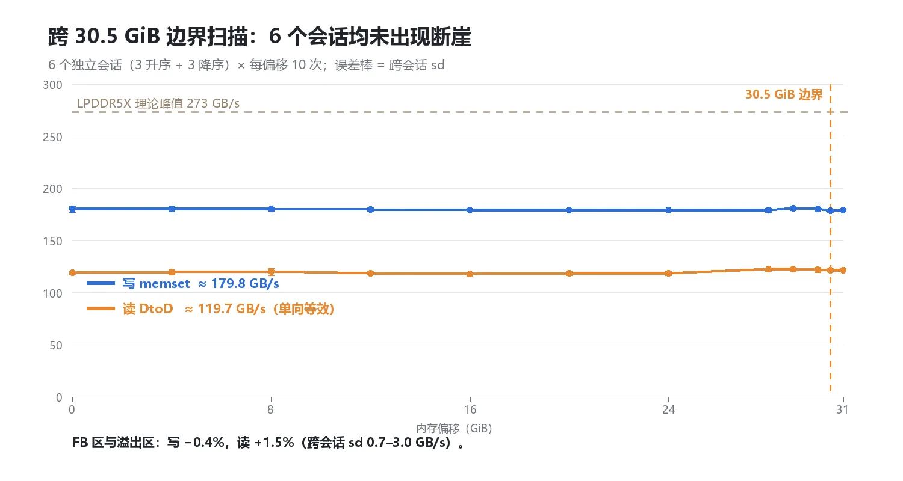

一个能让人争论半小时的数字
一台 ASUS GR1X，Windows 11，nvidia-smi 显示：
539MiB / 31232MiB
31,232 MiB，也就是 30.50 GiB（扣掉 14 MiB 保留是 30.486）。再查 DXGI，SharedSystemMemory = 16.18 GiB。两者相加约 46.7 GiB，而机器标称 64 GB。于是很自然得出一个结论：
64 GiB 在固件层被切成了 30.5 GiB 给 GPU、32.18 GiB 给系统。规划大模型时按 30 GB 显存算。
这句话方向对，但自己就先算不平：30.50 + 32.18 = 62.68 GiB，离 64 差 1.32 GiB——这 1.3 GiB 是固件保留（推算值，不是实测）。而且 30.5 与 32.2 都是 GiB，不是 GB。这个“加不平”本身就是线索：它不是简单的硬切，是“固件预留 + 驱动配额”两层叠加。
真实边界要用 CUDA Driver API 去问。cuMemGetInfo 的回答是：
total 45.92 GiB, free 45.72 GiB
后续用 bench/cap_probe.py 做了 3 个独立会话的夹逼（0.25 GiB 步进）：最大单次成功 45.75 GiB，46.0 GiB 失败，3/3 一致；持有 45.75 GiB 后连 0.25 GiB 都加不上。所以准确说法是：驱动配额读数 45.92 GiB，实际可分配 45.75 GiB（差 0.17 GiB）。
这个数字后来被第三方应用独立复现了一次：ComfyUI 启动日志打的是 Total VRAM 47022 MB——47,022 MiB = 49.31 GB = 45.92 GiB。很多人看到的“47 GB”，是把 MiB 数直接当 GB 读的产物，既不是十进制近似，也不是 47 GiB。
| 数字 | 来源 | 它回答的问题 |
|---|---|---|
| 31,232 MiB = 30.50 GiB | nvidia-smi | 专用帧缓冲分区多大 |
| 45.92 GiB | cuMemGetInfo | 这个上下文最多能分配多少（配额读数） |
| 32.18 GiB / 64 GiB | GlobalMemoryStatusEx / 固件、Geekbench | 系统看到多少、物理装了多少 |
先认清芯片：GB10 不是一张“显卡”
这台机器 GPU 是 6144 CUDA 核心、Compute Capability 12.1，内存是 LPDDR5X；DGX Spark 的 GB10 也是 6144 CUDA 核心、20 个 CPU 核（10×Cortex-X925 + 10×A725）、128 GB LPDDR5X、256-bit @ 8533 MT/s，理论带宽 273 GB/s（官方硬件页）。
同一个硅片家族，两种产品形态。关键差别不在 GPU，而在内存怎么分给谁：
- DGX Spark（Linux / DGX OS）：128 GB 是一个统一池，GPU 与 CPU 共享 DRAM。iGPU 没有专用帧缓冲，
nvidia-smi甚至显示Memory-Usage: Not Supported（Known Issues）。官方只说统一内存“允许更大内存用于 GPU 负载”，并提示cudaMemGetInfo可能低估可分配量（未回收的 SWAP 页）——具体上限本机没有实测，别把它写成“几乎全部”。 - GR1X（Windows / WDDM）：同样是统一内存架构，但固件先预留约 30.5 GiB 作 GPU 帧缓冲（UMA carve-out），OS 只看到 32.18 GiB；WDDM 再在这套划分上给出 CUDA 可寻址配额（45.92 GiB）。
一句话：DGX Spark 是“一体”，Windows 这台是“固件预留 + 驱动配额”两层。芯片一样，日子不一样。
示意图，非按比例。DGX Spark 的 128 GiB 与 GR1X 的 64 GiB 是两个配置，不是同一台机器的两种读数。
实测：45.92 GiB 是怎么来的
45.92 − 30.50 = 15.42 GiB（残差）。可见内存 32.18 GiB 的一半是 16.09 GiB；残差约是它的 96%。DXGI 报的 16.18 GiB 又是另一个量——它和残差差 0.76 GiB，两者不能混用。
所以它不是“64 GiB 的 72%”——72% 只是数值巧合——也不是某条文档化的“WDDM 公式”。Microsoft 对 SharedSystemMemory 的定义只有一句：适配器在运行中最多可消耗的系统内存（DXGI_ADAPTER_DESC），并没有“一半”这条规则。“16.18 ≈ 16.09”是我们在这台机器上量到的巧合，不是机制。
三个残差，三个来源：
45.92 − 30.50 = 15.42 GiB：CUDA 配额与 FB 的差。
32.18 / 2 = 16.09 GiB：可见内存的一半，恰好接近 15.42。
DXGI SharedSystemMemory = 16.18 GiB：适配器可消耗的系统内存上限。
三者在数值上接近，但不是同一个量；不要用其中一个去证明另一个。
第二个坑随之而来：能分配 ≠ 能用。
现场会话里，分配 40 GiB 时 nvidia-smi 的 used 卡在 31,080 MiB、free 只剩 139 MiB；Windows 提交量从约 15 GB 涨到 59.98 GB。这组数同样没有留档，只能当现场回显；但它指向的事实是对的：超出 FB 的部分落在系统内存 / 页文件里，而提交余量会先见底。顺带说，提交上限本身也不是常量——当时读到 61.86 GB，复测已经涨到 98.17 GB（系统托管页文件会自己长大）。
到这一步，很多分析会得出“溢出部分慢、只能放冷数据”的结论。这个结论至少不完整，也是整件事最有意思的地方。
翻转实验：跨过 30.5 GiB 的边界，速度有没有掉？
方法很直接：一次分配 32 GiB（比 FB 多 1.5 GiB），先整块预触碰把页提交掉，然后在不同偏移处测 512 MiB 块的写（cuMemsetD8）和读（D2D 到 FB）。
| 偏移（GiB） | 标称区域 | 写（GB/s） | D2D 单向（GB/s） |
|---|---|---|---|
| 0 | FB | 179.0 | 119.5 |
| 8 | FB | 178.4 | 119.2 |
| 16 | FB | 181.2 | 119.0 |
| 24 | FB | 177.1 | 117.1 |
| 29 | FB | 181.8 | 116.0 |
| 30 | 标称边界 | 176.3 | 117.0 |
| 30.5 | 标称溢出 | 178.8 | 117.3 |
| 31.0 | 标称溢出 | 176.6 | 118.1 |
6 个独立会话（3 升序 + 3 降序，每偏移 10 次）复测：FB 区写 179.8 GB/s、溢出区 179.0（差 −0.4%）；读 119.7 vs 121.5（+1.5%）；每偏移跨会话 sd 只有 0.7–3.0 GB/s。 已用 placement_probe 标定：前 29.76 GiB 记在 Dedicated；32 GiB 仍是单次分页分配，属观测而非结构证明。

为什么可能是平的？因为 GB10 的 FB 和“系统内存”在物理上是同一池 LPDDR5X。所谓“溢出”，可能只是这块地址在固件预留与 WDDM 配额之间换了归属，页表照样映射。是否存在一条“慢速链路”，本次实验既不能证实也不能证伪——只能说不支持“溢出必然慢”。
顺手验证了芯片身份：设备内 D2D 拷贝 117.5 GB/s 单向（5 会话：116.9–118.2），实际内存流量约 235 GB/s，相当于 273 GB/s 峰值的 86%；memset 纯写 179.8（5 会话）；纯读（torch reduction，8 GiB，5 个独立会话）252 GB/s（247–262），约峰值的 92%。这是典型的 LPDDR5X 效率，不是 GDDR7 独显（那个量级在 1.5–1.8 TB/s）。
页放置也做了标定：同一进程逐档分配并触碰，前 29.76 GiB 记在 Dedicated，之后每多 1 GiB，Shared 就多 1 GiB（36 GiB 时 Shared 6.44 GiB），而 nvidia-smi 的 FB 停在 30,978 MiB——超出边界的页确实落在系统内存，并且仍以 122 GB/s 被访问。
那 120 GB/s 的 pinned 路径是怎么回事？
实验里还有一组数字容易被误读：host↔device 的 cuMemcpy——pinned 下 H2D 122.9 GB/s（5 会话：121.7–123.6；早期单次 85.8 是受环境干扰的低值）、D2H 113.2 GB/s（单次），pageable 只有 17.6–21.9 GB/s（两个脚本、两种缓冲，不是同一条件的区间）。
如果拿它当“GPU 访问系统内存的速度”，就会得出“溢出很慢”的错误结论。但这是 copy staging 路径的开销：数据要先经过驱动的中转 / 封装，再落到目标地址，和你写一个 kernel 直接读那块内存不是一回事。pageable 更惨，是因为多了一次 bounce buffer 拷贝。
所以：加载权重该用 pinned 或 mmap；但判断“溢出区能不能当工作集”，不能看这个数字。
真正的限制：驻留与提交，不是带宽
溢出区没那么慢，那限制在哪？
- 地址空间有顶。驱动报告的配额是 45.92 GiB；已做 3 个独立会话夹逼：最大单次 45.75 GiB，46.0 GiB 失败（3/3 一致）。45.92 GiB 仍是配额读数。
- 提交会见底。40 GiB 分配对应约 60 GB 提交量（现场回显），提交上限是时点值（当时 61.86 GB，现测 98.17 GB）。按比例规划，比写死数字安全。
- 页会被驱逐。溢出页住在系统内存里，一旦系统内存吃紧，Windows 就把它们换到页文件。此时性能断崖来自缺页和磁盘 I/O，而不是链路速率。
溢出不是“住得远”，是“寄人篱下”。只要还住着，速度和房东一样；房东一赶，你就得搬——搬的过程才是慢的。
于是规划口径要这样写：
| 区域 | 容量 | 用途 |
|---|---|---|
| 专用 FB | 30.5 GiB（单进程 dedicated 可用约 29.7 GiB） | 热工作集：权重、KV cache、激活 |
| 溢出区 | ≤ 10 GiB | 冷权重、一次性加载，接受被驱逐的风险 |
| 系统内存 | ≥ 15 GiB | OS、驱动、浏览器、其他进程 |
| 提交余量 | ≥ 10 GB，且不超过当时上限的约 85% | 防止页文件打满导致分配失败或进程被杀 |
- 保守工作集：≤ 30 GiB
- 分配层面：最大单次 45.75 GiB（3/3 会话）；36 GiB 超配持续 5 分钟 × 2 会话可用（中位 122 GB/s），>40 GiB 长时间未验证
- 推理速度：按实测纯读 252 GB/s 估，30 GB 模型理论上限约 8 tok/s（252 ÷ 30 ≈ 8.4，未含实现损耗，实际约 6）。注意 118 GB/s 是 D2D 单向、180 是 memset 纯写、235 是 D2D 双向流量，都不能直接当读带宽
为什么 Linux 和 Windows 差这么多
同一颗 GB10，DGX Spark 上 128 GB 是一个统一池，Windows 上 CUDA 只有 45.92 GiB 配额。除 128 GB vs 64 GB 的容量配置差异外，Linux / Windows 的内存管理栈也不同：
- Linux / DGX OS：统一内存，没有 FB 分区概念，GPU 按统一地址访问；
nvidia-smi连 memory usage 都不显示（官方 Known Issues 的原文是“iGPU 没有专用帧缓冲”）。 - Windows / WDDM：固件先预留约 30.5 GiB 作专用 FB（这是 UMA carve-out，不是 WDDM 自己算出来的），OS 只见 32.18 GiB；WDDM 再给出 CUDA 可寻址配额。所以“专用显存”语义在 Windows 上是两层叠加，不是一本账。
所以“64 GiB 的机器为什么只能用 45.9 GiB”不是驱动 bug，是固件划分 + Windows 内存模型共同决定的。同一台机器装 Linux 会宽松得多——但 64 GB 版本在 Linux 下也不会变成 128 GB（Release Notes 里 64 GB 与 128 GB 是两个配置）。
方法论：三个问题，别混着问
这件事之所以绕，是因为大多数讨论把三个问题揉成了一个：
- 最多能分配多少？用
cuMemGetInfo/cuDeviceTotalMem，别看 DXGI；且要夹逼，别只读一次 total。 - 热数据住哪、多快？用 device-to-device 拷贝和 memset 测，别看 host↔device 的 copy 数字；且要多次会话、给 σ。
- 超出之后会怎样？看的是驻留能力和提交余量，不是“有没有慢链路”。
我们的判断也走了四段：第一版说“30.5 是上限”（错）；第二版说“45.9 可分配，但溢出很慢”（一半错）；第三版靠跨边界扫描改成“一次扫描未见断崖”；第四版补了 3 会话夹逼（45.75 GiB）、6 会话扫描（差 −0.4% / +1.5%）、36 GiB 超配持续 5 分钟 × 2 会话（中位 122 GB/s、停顿 2–3 次）。页放置也已标定：Dedicated 封顶 29.76 GiB，超出部分进 Shared；剩余限制是“观测而非结构证明”。
技术判断最贵的不是结论，是“这个结论是用什么证据得出的”。账面数字很便宜，也很会骗人；Driver API 的一次
cuMemAlloc比十页架构文档都诚实——但前提是，你得把那次调用的输出留下来。
如果你只记住三句话：
1. 三个数字都成立。30.50 GiB 是分区，45.92 GiB 是配额，32.18 GiB 是系统可见；不要相加。
2. 溢出不一定慢。6 个会话跨过 30.5 GiB 没有断崖；页在 Shared 里仍以 122 GB/s 被访问。
3. 真正的限制是驻留与提交。工作集按 ≤ 30 GiB 规划；被驱逐后才是页文件速度。
完整实验数据、复现命令与未覆盖项见 04 内存与带宽实测报告。实测环境：ASUS GR1X，RTX Spark N1X（6144 CUDA，CC 12.1），Windows 11 + WDDM，驱动 621.40，CUDA UMD 13.5，可见内存 32.18 GiB（34.56 GB），提交上限当时 61.86 GB / 复测 98.17 GB。基准（12:19–12:33）与 ComfyUI 负载（14:16–14:40）不是同一次干净实验。